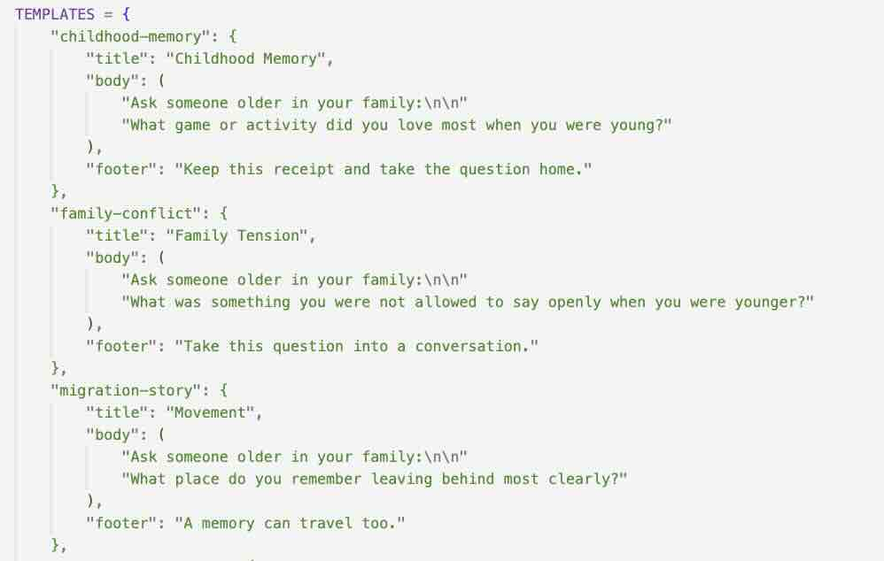
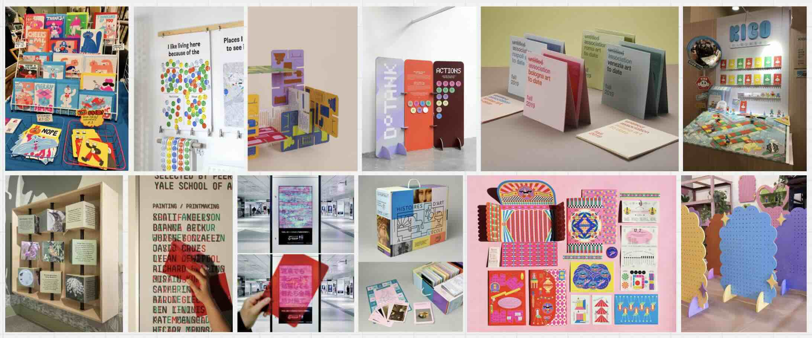
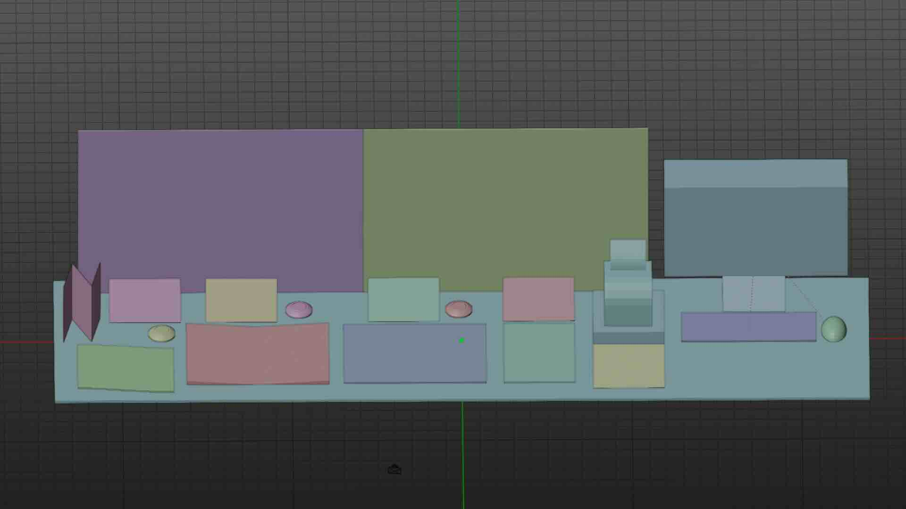
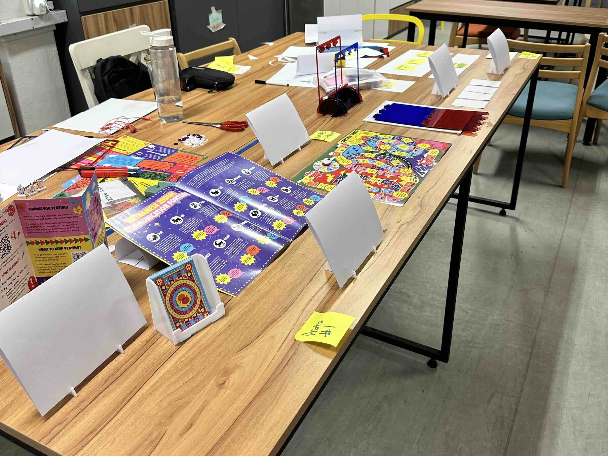
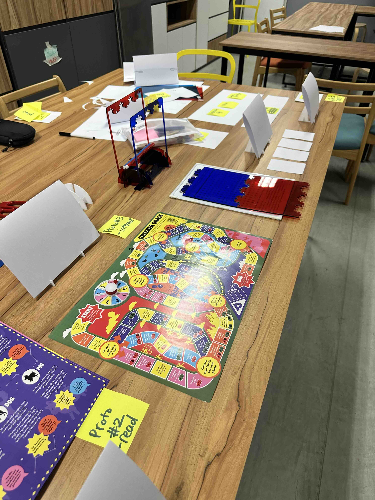

Activities
- Developing the script to make printer run
- Draft table layout and collect inspirations
- User test the Anaglyph puzzle
Reflection
After receiving the printer this week, I started working on making it print some custom prompts first. As this is a commercial-grade thermal printer that is commonly purchased for business to print receipts (POS printers), the buyer advertised that I could use software specialised for POS printing to customise the receipts. But this would create a template mostly, not customisable prompts.

So I contacted the artist of the installation I was inspired by and asked him how he did it, and he showed me his python script that he used for printer. However, his printer was set to print automatically, and printed a pre-determined messages that filled the whole receipts. Based on his script, I customised the code to create my own custom prompts that left space for the user to add their own stories. The printer managed to print my prompts exactly, and I can trigger it using the python script. The next step is to figure out how I want the user to trigger the printer at the installation site.

For the design workshop this week, I put together some inspiration that I want for my display, mainly very vibrant table decorations to fit with my art directions.

I also put together a mockup of my table display on Blender to demonstrate how I want to layout all the different elements. Especially since I won't have a lot of these elements until closer to the exhibition date, but I still want to present my vision for the table for the workshop.

And I put some placeholder as well as current iterations on the table to give a sense of scale and space to my table, since it might be easier to see it in person than just in the Blender mockup.

I received feedback on what information I should display for each part of the table, and to think about the flow of reading for the visitor for my table, which I'll keep working on for next week.

I also developed the anaglyph puzzle lenses by switching from the previous cellophane to acrylic lenses that better differentiated between red and blue due to the deeper blue color, and I will use these for the upcoming user test.
Literature This Week
Tasks
- Implement printer interaction mechanic
- Develop next iteration of table display
- User test anaglyph puzzle